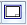

Set the drawing sheet scale
You can set the drawing sheet scale using either of the following workflows.
Set the sheet scale using the View Wizard
When using the drawing View Wizard command, the sheet scale is set automatically to the scale of the first drawing view—the principal or primary view—placed on the drawing sheet. The same scale is applied automatically to all subsequent views placed on the sheet. This ensures that the scale of all drawing views on the sheet is consistent.
-
Display a new working sheet.
-
Place a drawing view using the Drawing View Wizard by doing the following:
-
Choose the Home tab→Drawing Views group→View Wizard command
 .
. -
Choose a model.
-
Select a view that you want to place.
-
Click Finish to close the View Wizard.
To learn how to do this, see Create drawing views of a part or assembly.
-
-
On the View Wizard command bar, do the following:
-
Set the sheet scale to match the scale of the drawing view you are placing by selecting the Set Sheet Scale button .
-
If the drawing view outline appears too large or too small, you can specify a new sheet scale value using the Scale List on the command bar.
-
-
Click to place the view.
Instead of setting the sheet scale to match the drawing view, you can match the drawing view to the sheet scale currently in use by selecting the Set View Scale button

.Set the sheet scale based on a different drawing view
When you place the first drawing view using a command other than the View Wizard, or when you want to change which drawing view the sheet scale is based on, use the Set Sheet Scale command. For example, when you want to change which drawing view the sheet scale reported in the title block is associative to, do the following:
-
Right-click the drawing sheet tab and choose the Set Sheet Scale command.
The Set Sheet Scale command bar is displayed. If a sheet scale was defined previously, the value is shown on the command bar.
-
To derive the sheet scale from an existing drawing view, click the Drawing View Scale button
 , and then click the drawing view that you want to use to set the sheet scale.
, and then click the drawing view that you want to use to set the sheet scale.-
If the sheet scale is already derived from a drawing view, that drawing view is highlighted in the Select element color, and its scale is shown on the command bar.
Example:
You can use the sheet scale of the highlighted view, or you can click a different drawing view.
-
To specify a sheet scale manually, click the User-Defined Sheet Scale button
 , and then select a scale from the Scale list or type a scale in the Scale value box.
, and then select a scale from the Scale list or type a scale in the Scale value box.
-
-
To apply the sheet scale, click Accept on the command bar.
-
You can verify the current sheet scale by selecting the Sheet Setup command from the shortcut menu when the sheet tab is selected.
The Sheet Setup dialog box also lets you change a user-defined sheet scale, or remove the associativity between the sheet scale and a drawing view.
-
You can use callouts and other types of annotations to extract and display property text that identifies the sheet name, number, and scale of the active drawing sheet. For example, you can place a callout on a shared background sheet, in the drawing border title block, so that it displays the sheet scale on each working sheet.
To create a callout that extracts the Sheet Name, Sheet Number, and Sheet Scale properties, see the Help topic, Create property text.
-
You can define the sheet scale and other content for a drawing view caption using the Caption tab (Drawing View Properties dialog box).
How do I
Add custom drawing view scales to Solid EdgeLearn more
Sheet scale and drawing view scaleLook up more details
Set Sheet Scale commandSet Sheet Scale command bar